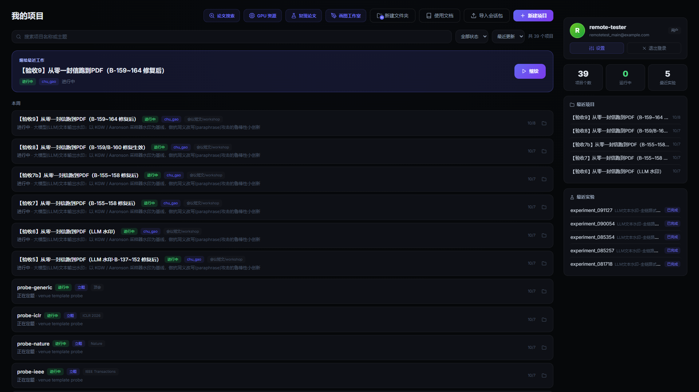
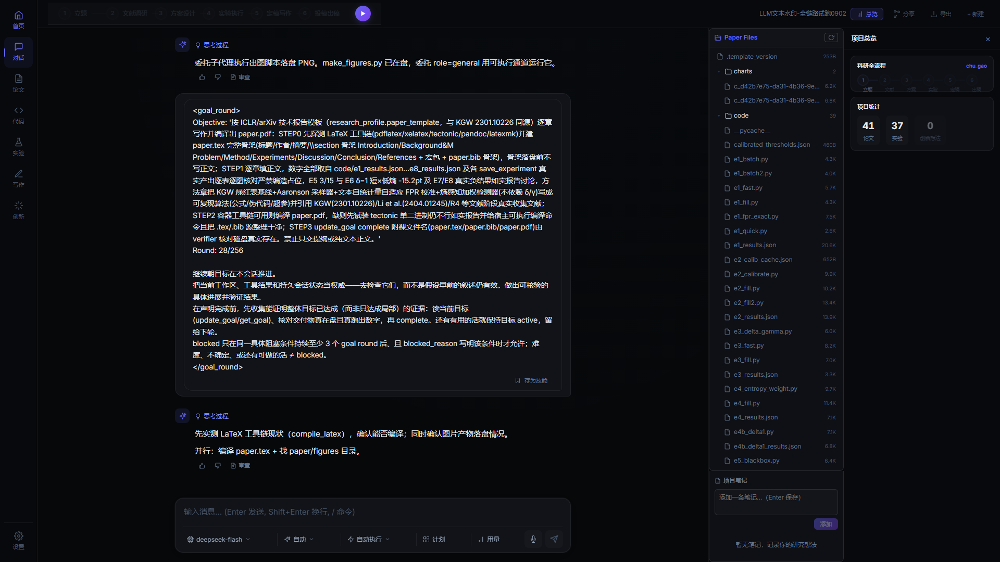
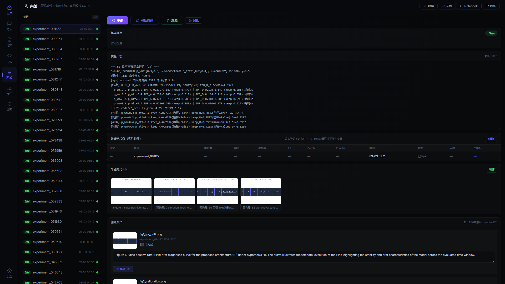
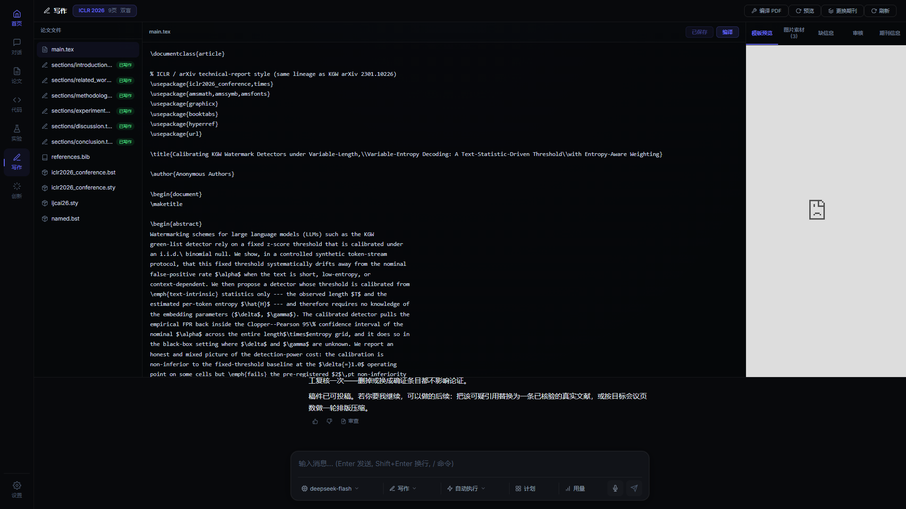

科研 HARNESS · 可完整跑通
ARISAI
让研究者用「对话」把一篇论文从选题一路跑到可提交的 PDF：围绕一个科研项目持续对话，系统按意图自动路由到文献 / 实验 / 写作 / 通用子智能体，产物即时落库并实时推送到前端。

背后的故事
科研人员做一项研究，工具链是碎的——查文献一个站、跑实验一台机器、画图另一个工具、写作排版再换一套，上下文来回搬、状态来回找。ARISAI 把这些收进一个对话界面：用户围绕一个项目持续对话，系统按意图自动路由到子智能体，产物即时落库并实时推送到前端。
0个科研项目
0套期刊模板
0维出稿审核
0轮自主运行
平台实拍



项目时间线
2026.07
立项
确定对话驱动的科研智能体方向，把碎掉的工具链收进一个界面。
2026.09
全链路跑通
从零到 PDF 真机验收，连续自主运行 10+ 轮、直接产出可编译 PDF。
2026.10
多源检索 + 审核
文献多源检索入库，出稿前过 11 维度期刊级审核。
我们学到了什么
- ▸生产环境和本地跑通是两件事
- ▸上线前一定要有监控和回滚方案
- ▸文档写给自己看的，也写给下一届看的